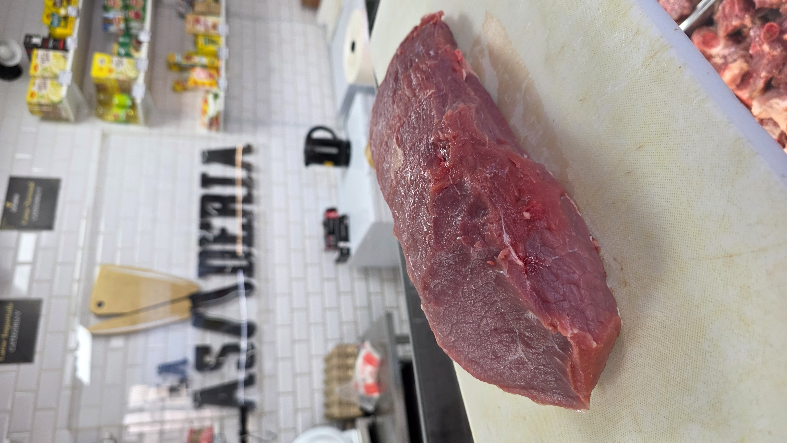
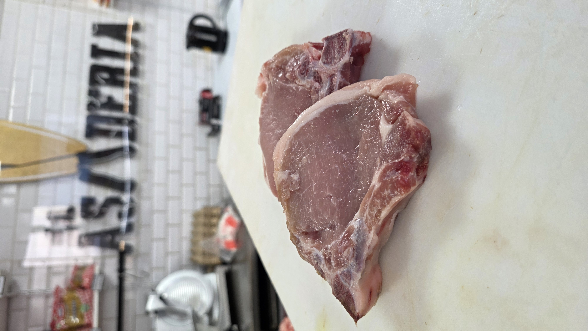
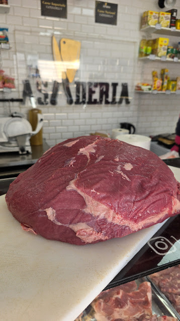

Nuestros Cortes

Lomo Liso
Corte magro y versátil, ideal para parrilla, horno o plancha.

Pollo Ganso
Perfecto para guisos, estofados y preparaciones al horno.

Chuletas de Cerdo
Jugosas y sabrosas, ideales para parrilla o sartén.

Pechuga de Pollo
Un clásico saludable y versátil para toda la familia.

Trutros de Pollo
Ideal para horno, parrilla o preparaciones caseras.

Posta Negra
Corte tradicional de vacuno ideal para olla, estofados y preparaciones de cocción lenta.